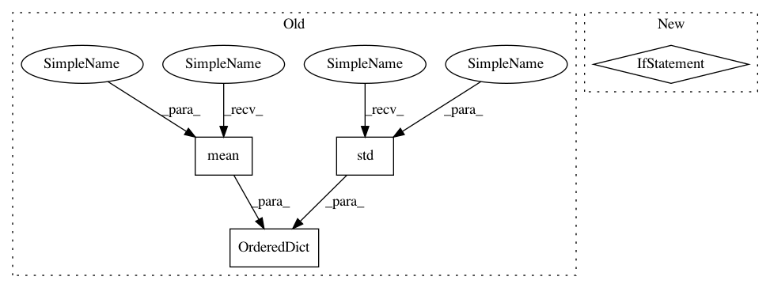

5c81c1c3138d296b8ac5f836e118cfb849b7bf5d,softqlearning/algos/softqlearning.py,SoftQLearning,_evaluate,#SoftQLearning#Any#,464
Before Change
path["rewards"].sum() for path in paths
]
statistics = OrderedDict([
("Epoch", epoch),
("Alpha", self._alpha),
("DiscountedReturnAvg", average_discounted_return),
("TotalReturnAvg", np.mean(total_returns)),
("TotalReturnMin", np.min(total_returns)),
("TotalReturnMax", np.max(total_returns)),
("TotalReturnStd", np.std(total_returns))
])
for key, value in statistics.items():
logger.record_tabular(key, value)
After Change
]
episode_lengths = [
len(p["rewards"]) for p in paths
]
statistics = OrderedDict([
In pattern: SUPERPATTERN
Frequency: 3
Non-data size: 4
Instances
Project Name: rail-berkeley/softlearning
Commit Name: 5c81c1c3138d296b8ac5f836e118cfb849b7bf5d
Time: 2018-05-22
Author: haarnoja@berkeley.edu
File Name: softqlearning/algos/softqlearning.py
Class Name: SoftQLearning
Method Name: _evaluate
Project Name: rail-berkeley/softlearning
Commit Name: a41f2ff4c1437f0b61e76265c31bdec71be0556f
Time: 2019-04-26
Author: hartikainen@berkeley.edu
File Name: softlearning/algorithms/sql.py
Class Name: SQL
Method Name: get_diagnostics
Project Name: rail-berkeley/softlearning
Commit Name: a41f2ff4c1437f0b61e76265c31bdec71be0556f
Time: 2019-04-26
Author: hartikainen@berkeley.edu
File Name: softlearning/algorithms/sac.py
Class Name: SAC
Method Name: get_diagnostics